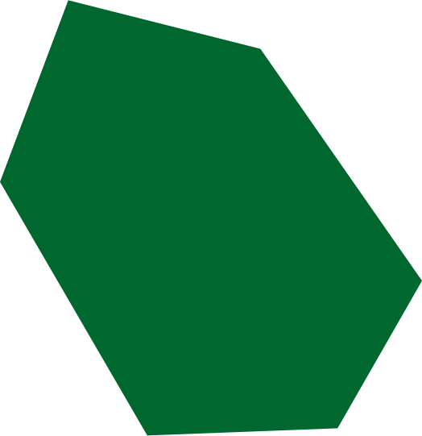
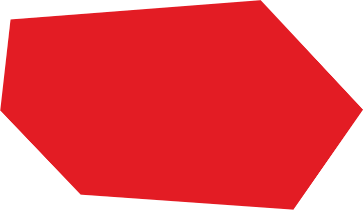
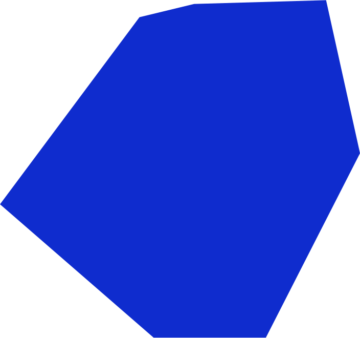
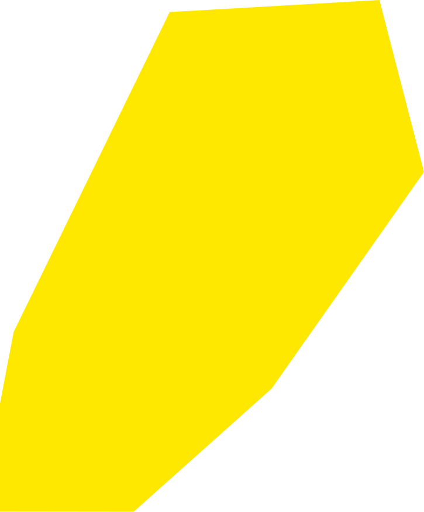
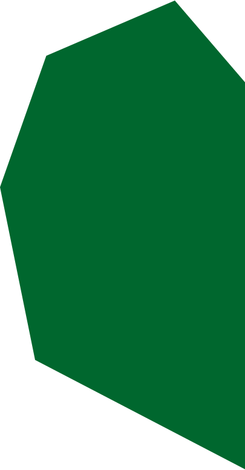

  <div id="hero-section" class="relative -mt-96 h-[64.208rem] md:mt-8 lg:mx-auto lg:mt-20">
    <div class="h-screen md:min-h-screen w-full lg:mt-0">
      
      
      
      
      
      
      <div
        id="hero-text"
        class="absolute inset-0 top-[69%] z-30 justify-center md:top-[39%] lg:-top-[20%] lg:flex lg:items-center"
      >
        <p
          class="w-auto text-center font-outfit text-2xl text-primaryColor md:text-4xl lg:text-5xl"
        >
          We help you set<br />
          focus and gain<br />
          impact. By adding<br />
          to the conversation,<br />
          not to the noise.
        </p>
      </div>
    </div>
  </div>
  
